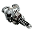

| № | Изображение | Название | Описание | Характеристики | Энергопотребление | Стоимость | Размер | |
| Пассивно | При применении | |||||||
| -- | Корпус | Основная часть космического корабля - его корпус.
В него встраивается всё прочее оборудование. Прочность обшивки корпуса: ---- / ---- ед. Корпус рассчитан на подъём массы до ---- тонн. Вместимость встроенного генератора: ---- / ---- ед. |
Вместимость: +(8*lvl)% (+80%) Обшивка: +(10*lvl)% (+100%) Генератор: 200 + 80*lvl (1000) |
(17000 + (вместимость + обшивка)*20) *1.3^(lvl-1) + умножить на % стоимости |
Вместимость: 250-400 Обшивка: 200-300 |
|||
|---|---|---|---|---|---|---|---|---|
| 0 | Ремонтный модуль | Специальные дроиды, разработанные для быстрого
ремонта корпуса при повреждениях за счёт
использования быстрозастывающего геля. Модуль способен восстанавливать до --- ед. обшивки каждый ход. Энергопотребление на ремонт обшивки: -.- ед. |
Мощность: 10 + 8*lvl (90) Ремонт ускоряется вдвое вне боя. Для этого требуется не получать повреждений два хода. |
Ремонт обшивки: 0.5 + 0.5*lvl |
2400 | 20-60 | ||
| 1 | Генератор защитного экрана | Устройство генерирует мощный энергетический
экран, способный поглотить ---- / ---- ед. Скорость восстановления экрана: -- ед. + --% от максимума. Энергопотребление на поддержание экрана: -.- ед. Энергопотребление на восстановление экрана: -.- ед. При полном разрушении защитного экрана ему необходимо 2 хода на восстановление. |
Уровень щита: 50 + 50*lvl (550) Восстановление щита в бою: 10 + 10% от макс. Восстановление щита удваивается вне боя. Для этого требуется не получать повреждений два хода. |
Поддержание защитного экрана: 0.3 + 0.1*lvl |
Восстановление защитного экрана: 0.5 + 0.3*lvl |
3000 | 30-75 | |
| 2 | Магнитный захват | Устройство захватывает объеты в энергетический луч,
при помощи которого возможно притягивать объекты
массой до --- тонн и на расстоянии до --- св. ед. Энергопотребление: -.-- ед. за еденицу массы объекта. |
Дальность: 40 + 20*lvl (240) Мощность: 20 + 15*lvl (170) |
Захват объекта: 0.2 + 0.05*lvl |
2000 | 18-60 | ||
| 3 | Радар | Даёт возможность обнаруживать в космическом пространстве корабли, планеты и прочие объекты в радиусе до ----- св. ед. вокруг корабля, а также получать о них информацию, если защитное поле цели не превышает ---- ед. |
Дальность обзора: 2000 + 400*lvl (6000) Мощность сканирования: 40+60*lvl (640) |
Обнаружение объектов: 0.5 + 0.1*lvl |
1600 | 15-50 | ||
| 4 | Генератор материи | Нагнетает частички материи вокруг корабля, путём ипользованиия реакции топлива. После преодоления критического порога массы, часицы коллапсируют в червоточину, которая связывает между собой две звёздные системы. Максимальное расстояние, которое можно преодолеть подобным образом, составляет -- св. лет. | Дальность: 15 + 3*lvl (45) |
Открытие кротовой норы: 5 * дальность |
2800 | 25-75 | ||
| 5 | Энергетический генератор материи | Технология реликтов для создание червоточин. Устройство работает на чистой энергии, не используя катализатора в виде топлива. Проблема технологии в том, что на создание подобного объекта требуется колоссальное количество энергии. Максимальная дальность перехода достигает --- св. лет. | Дальность: 20 + 5*lvl (70) |
Открытие кротовой норы: 50 + 10 * дальность |
4000 | 22-66 | ||
| 6 | Двигатель | Критически важное оборудование любого
космического корабля. Позволяет перемещаться
в космосе с предельной скоростью ---- св. ед. |
Скорость: 500 + 70*lvl (1200) |
Движение: 2 + 0.7*lvl |
3500 | 35-90 | ||
| 7 | Топливный бак | Топливо используется генератором материи для
открытия кротовых нор в другие системы. Вместимость бака: --- / --- ед. |
Объём: 5 + (0.15*lvl + 0.5) * размер (5 + 2 * размер) | 1000*1.2^(lvl-1) + вместимость*50 | 25-100 | |||
| 8 | Генератор энергии | Для всего оборудования требуется питание
генератора. Устройство использует специальные
блоки для хранения энергии до момента использования. Вместимость энергии генератора составляет ----- / ----- ед. |
Вместимость: 500 + 300*lvl + (4*lvl + 10) * размер (3500 + 50 * размер) | 1500*1.2^(lvl-1) + вместимость*2 | 30-130 | |||
| 11-55 |  | Вооружение | 1300 + умножить на % стоимости |
20-35 | ||||
| Шанс модернизации: 15% Оборудование |
Модернизация Цена: +10/20/30 % |
||||||
| Тектитовый | Денеривый | Наноплазменный | Со вставками из полудетрита | Облегчённый | Гибридный | Защитная система | Боевая система |
|
Дальность действия радара: +200/350/500 св. ед. Мощность сканирования: +20/35/50 ед. Мощность защитного экрана: -15/25/35 ед. |
Мощность: +8/14/20 ед. Энергопотребление: +0.4/0.6/0.8 ед. Износоустойчивость: -10/20/30 % |
Стоимость: -10/15/20 % Энергопотребление: -15/25/35 % Размер: -20/30/40 % Мощность: -15/20/25% Износоустойчивость: -16/23/30 % |
Мощность лазерных орудий: +2/4/6 ед. Мощность разрывных орудий: +1/2/3 ед. Навык стрельбы: +1/1/1 Мощность: -8/13/18 ед. Навык пилота: -1/1/1 |
||||
|---|---|---|---|---|---|---|---|
|
Износоустойчивость: +30/50/70 % Навык техника: +1/1/1 Размер: +13/20/27 % Навык пилота: -1/1/1 |
Мощность: +40/70/100 ед. Энергопотребление на восстановление защитного экрана: +0.3/0.5/0.7 ед. Износоустойчивость: -10/20/30 % |
Стоимость: -10/15/20 % Энергопотребление: -15/25/35 % Размер: -25/35/40 % Мощность: -15/20/25% Износоустойчивость: -16/23/30 % |
Мощность лазерных орудий: +2/4/6 ед. Мощность разрывных орудий: +1/2/3 ед. Навык стрельбы: +1/1/1 Мощность: -30/55/80 ед. Навык пилота: -1/1/1 |
||||
|
Износоустойчивость: +30/50/70 % Навык техника: +1/1/1 Размер: +13/20/27 % Навык пилота: -1/1/1 |
Дальность: +10/20/30 ед. Мощность: +8/16/24 ед. Износоустойчивость: -10/20/30 % |
Мощность ремонтного модуля: +7/14/21 ед. Навык пилота: +1/1/1 Дальность: -10/20/30 ед. Мощность: -10/20/30 ед. Навык техника: -1/1/1 |
|||||
|
Дальность действия: +200/350/500 св. ед. Мощность сканирования: +20/35/50 ед. Мощность защитного экрана: -15/25/35 ед. |
Дальность наведения орудий: +10/17/24 ед. Навык стрельбы: +1/1/1 Дальность действия: -200/275/350 св. ед. Мощность сканирования: -10/20/30 ед. Навык техника: -1/1/1 |
Мощность защитного экрана: +20/35/50 ед. Навык пилота: +1/1/1 Дальность действия: -260/380/500 св. ед. Навык техника: -1/1/1 |
|||||
|
Дальность действия радара: +200/350/500 св. ед. Мощность сканирования: +20/35/50 ед. Мощность защитного экрана: -15/25/35 ед. |
Дальность наведения орудий: +10/17/24 ед. Навык стрельбы: +1/1/1 Дальность открытия кротовой норы: -2/3/4 ед. Навык техника: -1/1/1 |
Мощность защитного экрана: +20/35/50 ед. Навык пилота: +1/1/1 Дальность открытия кротовой норы: -2/3/4 ед. Навык техника: -1/1/1 |
|||||
|
Дальность действия радара: +200/350/500 св. ед. Мощность сканирования: +20/35/50 ед. Мощность защитного экрана: -15/25/35 ед. |
Скорость: +40/65/90 ед. Энергопотребление : +0.4/0.6/0.8 ед. Износоустойчивость: -10/15/20 % |
Дальность наведения орудий: +10/17/24 ед. Навык стрельбы: +1/1/1 Дальность действия: -200/275/350 св. ед. Мощность сканирования: -10/20/30 ед. Навык техника: -1/1/1 |
Стоимость: -10/15/20 % Энергопотребление: -15/25/35 % Размер: -25/35/40 % Скорость: -15/20/25 % Износоустойчивость: -16/23/30 % |
||||
|
Износоустойчивость: +40/70/100 % Навык техника: +1/1/1 Размер: +14/22/30 % Навык пилота: -1/1/1 |
Стоимость: -10/15/20 % Размер: -15/25/35 % Вместимость: -10/15/20 % Износоустойчивость: -14/22/30 % |
||||||
|
Износоустойчивость: +40/70/100 % Навык техника: +1/1/1 Размер: +14/22/30 % Навык пилота: -1/1/1 |
Стоимость: -10/15/20 % Размер: -15/25/35 % Вместимость: -10/15/20 % Износоустойчивость: -14/22/30 % |
Мощность ракетных орудий: +6/9/12 ед. Скорость двигателя: +20/35/50 ед. Навык стрельбы +1/1/1 Вместимость: -20/30/40 % Навык пилота: -1/1/1 |
|||||